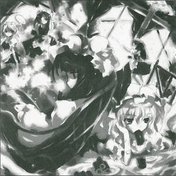
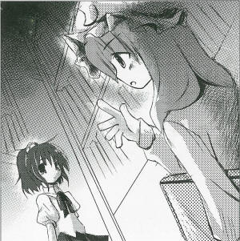

| Season 119, 4th of the Book Month (July)
The Great Out-of-season Setsubun
Festival at the Scarlet Devil Manor
"By The Way, What Is Setsubun?", Said Maids Month X, day X: Even though summer is approaching, an out-of-season Setsubun festival was held at the Scarlet Devil Mansion at the bank of the lake. Because there are no oni in Gensokyo, Setsubun hasn't been celebrated in a long time. For that reason, the event called Setsubun is also unknown among the maids. To find out why Setsubun festival has been held again so suddenly, I decided to find someone in the midst of the excitement who could tell me. The Scarlet Devil Mansion was already filled with roasted beans. Someone said to throw them at people's shadows and chaos ensued. That's how it started. The mistress of Scarlet Devil Mansion, Remilia Scarlet (vampire), preferred not to partake in the bean throwing, instead eating the Maki rolls. "Those roasted beans are pretty useless. You burn your hand when you pick them up... Everyone threw them all in bunches because it looked like fun. After that, I forbade them to throw at me. When a bean hits you it really feels like a burn." The one planning this event was Patchouli Knowledge (witch). I asked her why she arranged this out-of-season Setsubun festival so suddenly.
I then inquired why she so suddenly decided to carry out a counter-measure plan against the oni. "It helps to be preventive, and the Hall of Devils can be raided during peace-addled times. But I shouldn't be revealing all of our reasons, correct?" The Scarlet Devil Mansion seems peace-addled enough. A long time has already passed since the Oni withdrew from Gensokyo. In this way, this mystical Setsubun celebration is to prevent the oni from returning to Gensokyo. This is something we tengu are sure will happen. Currently, we tengu are the ones most involved in the oni matter.
(Aya Shameimaru)
|
|
 Patchouli But the fact is that they certainly were here. Aya Is that so? That's certainly a lost person's illusion, isn't it? Patchouli Certainly a lost person. Aya Is throwing beans around really effective? Patchouli The cleaning afterward was terrible. Aya It must have been. Patchouli At least I had decided from the start to prohibit it in the library. Aya I thought you were a little too honest. Really, if said 2 or 3 times before that there were oni outside, that should've been enough. Patchouli Hmmmm... But there aren't many that managed to get in. Aya You should be worried if you are mistaken if you run into one. Patchouli That's fine, because the maids associate with the oni, things will be settled quickly. Actually, Remi can't touch the beans so she was unable do it. Aya It seems vampires are also weak against roasted beans. Patchouli Remi was rather bored by the events, as she only accepted eating the Maki rolls. Aya That really doesn't have much to do with oni... Patchouli You seem to know a great deal about Setsubun. Why is that? Aya A long time ago, tengu and oni were friendly with each other. That's why we know the most about anything relating to the oni, such as Setsubun, in all of Gensokyo. Patchouli If so, do you understand why you throw beans to drive out oni? Aya You've heard of things like the five phases or the Demon Gate... Patchouli No, that's not it. You've also been affected by the humans' distorted interpretations. The truth is amazingly simple. Aya Huh? Patchouli It was a play that the oni decided, a satire against humans. The aspect Oni hates most about humans is the lying, so they brought roasted beans with them. Aya Was that the case? Patchouli The act of scattering the beans was originally connected to making buds grow as an act of farming. By setting fire to the beans beforehand, no sprouts would emerge from the soil. Which means that the humans were merely performing a false act of farming... and... Aya So when you scatter the beans it's like you're saying, "I don't know if I'm a human, but I am a liar~.". Patchouli So perhaps from the start, in order for the humans to be able to exterminate themselves, the oni decided on their own weakness. Aya Why did they need to do something like that? Patchouli That is because the power was too strong. Even though they have a genuine fatal weakness, before it could be discovered the oni made up some their own. Even though they're almost the strongest beings, they certainly have a strange weakness. Aya And the vampire's weakness to roasted beans, maybe it was just to hide her weakness to sunlight? Patchouli I don't know of any camouflage to sunlight, except for perhaps a parasol for walks outside. Aya You are also unexpectedly weak to sunlight. It doesn't look like you've been outside for a long time. Patchouli Sunlight damages books and my hair so I detest it.
Patchouli Knowledge Remilia's friend, who has been a witch for approximately one hundred years. She is a patient with asthma, and usually shuts herself away in the library. Mainly good at spiritual magic. Appearances: Embodiment of Scarlet Devil, Immaterial and Missing Power, Imperishable Night, Phantasmagoria of Flower View |
| [PREVIOUS ARTICLE : Meiling] | [INDEX] | [NEXT ARTICLE : Suika] |